Leonardo Pisano Bigollo,“Fibonacci”: Italian (1170–1250)
With the dawn of the thirteenth century, both the field of mathematics and the European world began to acquire their modern image. This was largely due to the Italian mathematician Leonardo Pisano Bigollo, best known as Fibonacci. Fibonacci forever changed Western methods of calculation, which facilitated the exchange of currency and trade. Furthermore, he presented mathematicians with challenges that remain unsolved to this day; they are published in countless books and provide material for a journal published quarterly since 1963 by the Fibonacci Association.
Leonardo Pisano Bigollo, or Leonardo of Pisa, is today known as Fibonacci. The name Fibonacci possibly derived from the Latin filius Bonacci, meaning a son of Bonacci, but, more likely, it might have been derived from de filiis Bonacci, referring to the family of Bonacci. He was born to the wealthy Italian merchant Guglielmo Bonacci and his wife in the port city of Pisa, Italy, around 1170 shortly after the start of construction of the famous bell tower known today as the Leaning Tower of Pisa. These were turbulent times in Europe. The Crusades were in full swing, and the Holy Roman Empire was in conflict with the papacy. The cities of Pisa, Genoa, Venice, and Amalfi, although frequently at war with each other, were maritime republics with specified trade routes to the Mediterranean countries and beyond. Pisa had played a powerful role in commerce since Roman times, and, even earlier, it served as a port of call for Greek traders. Early on, Pisa had established outposts for its commerce among its colonies and along trading routes.
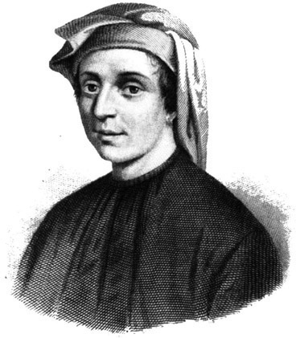
Figure 10.1. Fibonacci.
In 1192, Guglielmo Bonacci became a public clerk in the customs house for the Republic of Pisa, which was stationed in the Pisan colony of Bugia (today Bejaia, Algeria) on the Barbary Coast of Africa. Shortly after his arrival, he brought his son, Leonardo, to join him so that the boy could learn the skill of calculating and become a merchant. The ability to perform calculations was significant, since each republic had its own units of money and traders had to calculate monies due them. This entailed determining currency equivalents on a daily basis. It was in Bugia that Fibonacci first became acquainted with the “nine Indian figures,” as he called the Hindu numerals, and “the sign 0 which the Arabs call zephyr.” He declares his fascination for the methods of calculation using these numerals in the only source we have about his life story, the prologue to his most famous book, Liber Abaci (The Book of Calculation), which he wrote in 1202 and revised in 1228 (see fig. 10.2). This was the first time Hindu-Arabic numerals appeared in Europe. During his time away from Pisa, he received instruction from a Muslim teacher who introduced him to a book on algebra titled al-Kitāb al-mukhtaṣar fī ḥisāb al-jabr wal-muqābala (The Compendious Book on Calculation by Completion and Balancing) by the Persian mathematician Mụḥammad ibn Mūsā al-Khwārizmī (ca. 780–ca. 850), which greatly influenced him. By the way, the name “algebra” comes from the title of this book.
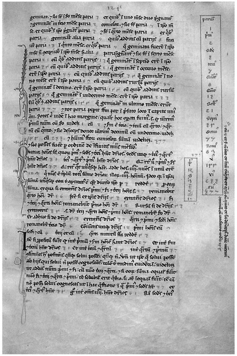
Figure 10.2. A page of Fibonacci’s Liber Abaci (from the Biblioteca Nazionale di Firenze), showing the Fibonacci numbers in the right margin.
During his lifetime, Fibonacci traveled extensively to Egypt, Syria, Greece, Sicily, and Provence, where he not only conducted business but also met with mathematicians to learn their ways of doing mathematics.. When he returned to Pisa around the turn of the century, Fibonacci began to write about calculation methods with the Indian numerals for commercial applications in his book Liber Abaci. The volume consists largely of algebraic problems of “real world” situations that require more-abstract mathematics. Fibonacci wanted to spread these newfound techniques to his compatriots.
Bear in mind that during these times, the printing press had not yet been invented, so books had to be handwritten by scribes; if a copy was to be made, that, too, had to be handwritten. Fibonacci had written other works, such as Practica Geometriae (1220), a book on the practice of geometry. It covers geometry and trigonometry with a rigor comparable to that of Euclid with ideas presented in proof form as well as in numerical form, using these “new,” very convenient, numerals. Here, Fibonacci uses algebraic methods to solve geometric problems, as well as the reverse. In 1225, he wrote Flos (on flowers or blossoms) and Liber quadratorum (The Book of Squares), the latter of which truly distinguished Fibonacci as a talented mathematician, and ranking him very high among number theorists. Fibonacci likely wrote additional works; however, there is no trace of them today. His book on commercial arithmetic, Di minor guisa, is lost, as is his Commentary on Book X of Euclid’s Elements, which contained a numerical treatment of irrational numbers, as compared to Euclid’s geometrical treatment of them.
The confluence of politics and scholarship brought Fibonacci into contact with the Holy Roman Emperor Frederick II (1194–1250) in the third decade of the century. Frederick had spent the years up to 1227 consolidating his power in Italy; he had been crowned king of Sicily in 1198, then king of Germany in 1212, and then, by the pope in St. Peter’s Cathedral in Rome, Holy Roman Emperor in 1220. In its maritime conflicts with Genoa and its land-based conflicts with Lucca and Florence, Frederick supported Pisa, which then had a population of about ten thousand. As a strong patron of science and the arts, Frederick became aware of Fibonacci’s work through the scholars at his court who had corresponded with Fibonacci since his return to Pisa around 1200. These scholars included Michael Scotus, who was the court astrologer, and the person to whom Fibonacci dedicated his book Liber Abaci; Theodorus Physicus, the court philosopher; and Dominicus Hispanus, who, when Frederick’s court met in Pisa around 1225, suggested to Frederick that he meet Fibonacci. The meeting took place as expected within the year.
Johannes of Palermo, another member of Frederick II’s court, presented a number of problems as challenges to the great mathematician Fibonacci. He solved three of these problems, the solutions for which he provided in Flos, which he sent to Frederick II. One of the problems he was able to solve, which was taken from the Persian mathematician Omar Khayyam’s (1048–1131) book on algebra, was to solve the equation: x3 + 2x2 + 10x = 20. Fibonacci knew that this was not solvable with the numerical system then in place—the Roman numerals. He provided an approximate answer, pointing out that the answer was neither an integer, nor a fraction, nor the square root of a fraction. Without any explanation, he gave his approximate solution in the form of a sexagesimal number (i.e., a number from a base-60 numerical system): 1.22.7.42.33.4.40, which is equal to
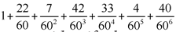
. However, with today’s computer-algebra system, we can identify the proper solution—which is by no means trivial! It is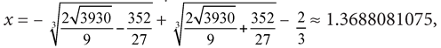
which compares to Fibonacci’s value of 1.3924... .
Another of the problems with which he was challenged and was able to solve is one we can explore here, since it doesn’t require anything more than some knowledge of basic algebra. Remember that although these methods may seem elementary to us, they were hardly known at the time of Fibonacci, and so this was considered a real challenge. The problem was to find the perfect square that remains a perfect square when increased or decreased by 5.
Fibonacci found the number
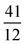
as his solution to the problem. To check this, we must both add 5 to and subtract 5 from the number, then see if the result is still a perfect square: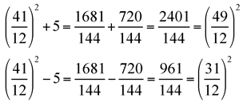
Since both results from the addition and subtraction are perfect squares, we have shown that  meets the criteria set out in the problem. Luckily, the problem asked for 5 to be added and subtracted from the perfect square; had he been asked to add or subtract 1, 2, 3, or 4 instead of 5, the problem could not have been solved.
meets the criteria set out in the problem. Luckily, the problem asked for 5 to be added and subtracted from the perfect square; had he been asked to add or subtract 1, 2, 3, or 4 instead of 5, the problem could not have been solved.
The third problem, whose solution Fibonacci also presented in Flos, was to solve the following: Three men are to share an amount of money in the following parts:,  and
and
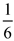
. Each person takes some money from this total amount until there is nothing left. The first man then returns of what he took; the second,
of what he took; the second,  of what he took; and the third,
of what he took; and the third,  of what he took. When the total of what was returned is divided equally among the three, each has his correct share, namely,
of what he took. When the total of what was returned is divided equally among the three, each has his correct share, namely,  ,
,  and
and 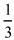
. What was the original amount of money, and how much did each person get from that original sum?Although none of Fibonacci’s competitors could solve any of these three problems, to the final question he determined that 47 was the smallest amount possible for the original sum of money, but he claimed that the problem was indeterminate.
In 1240, Fibonacci was honored with a lifetime salary by the Republic of Pisa for his service to the people, whom he advised on matters of accounting, often pro bono. We do not know exactly when Fibonacci died, but it is believed that he died in Pisa at some point between 1240 and 1250.
Although Fibonacci was considered one of the greatest mathematicians of his time, his fame today is largely based on the book, Liber Abaci. To appreciate his work, let us consider his most well-known text as an example. This extensive volume is full of very interesting problems. Liber Abaci was based on the knowledge of arithmetic and algebra that Fibonacci had accumulated during his travels; furthermore, it was widely copied and imitated, and, as we noted above, it introduced to Europe both the Hindu-Arabic place-valued decimal system and Arabic numerals. The book was increasingly widely used for the better part of the next two centuries—a bestseller! Fibonacci begins his famous book Liber Abaci with the following:
The nine Indian figures are:
9 8 7 6 5 4 3 2 1.
With these nine figures, and with the sign 0, which the Arabs call zephyr, any number whatsoever is written, as demonstrated below. A number is a sum of units, and through the addition of them the number increases by steps without end. First one composes those numbers, which are from one to ten. Second, from the tens are made those numbers, which are from ten up to one hundred. Third, from the hundreds are made those numbers, which are from one hundred up to one thousand. . . . and thus, by an unending sequence of steps, any number whatsoever is constructed by joining the preceding numbers. The first place in the writing of the numbers is at the right. The second follows the first to the left.
Fibonacci used the term “Indian figures” to refer to the Hindu numerals. Despite their relative facility, these numerals were not widely accepted by merchants, who were suspicious of any who knew how to use them. These merchants were simply afraid of being cheated. We can safely say that it took the same three hundred years for these numerals to catch on as it did for the leaning tower of Pisa to be completed.
Interestingly, Liber Abaci also contains simultaneous linear equations. Many of the problems that Fibonacci considers, however, were similar to those appearing in Arab sources. This does not detract from the value of the book, since it is the collection of the solutions to these problems that establishes Liber Abaci as a major contribution to our development of mathematics. As a matter of fact, a number of mathematical terms that are common today were first introduced in Fibonacci’s most famous text. Within it, he referred to “factus ex multiplicatione”; this is our first record of these words, from which we now speak of the “factors of a multiplication.” Incidentally, two other words whose introduction into the current mathematics vocabulary seems to stem from this famous book are “numerator” and “denominator.”
The second section of Liber Abaci includes a large collection of problems aimed at merchants. They relate to the price of goods, how to convert between the various currencies in use in Mediterranean countries, calculate profit on transactions, and problems that had probably originated in China.
Fibonacci was aware of a merchant’s desire to circumvent the church’s ban on charging interest on loans. Therefore, he devised a way to hide the interest in a higher initial sum than the actual loan, and then base the calculations on compound interest.
The third section of the book contains many problems such as:
A hound whose speed increases arithmetically chases a hare whose speed also increases arithmetically, how far do they travel before the hound catches the hare?.
A spider climbs so many feet up a wall each day and slips back a fixed number each night, how many days does it take him to climb the wall?.
Calculate the amount of money two people have after a certain amount changes hands and the proportional increase and decrease are given.
There are also problems involving perfect numbers (those numbers for which the sum of their proper factors is equal to the number itself), there are also problems where Fibonacci employs to the Chinese remainder theorem, which states that if one knows the remainders of the division of a number by various integers than one could also determine the remainder of a division by the product of these integers, assuming that the devices are relatively prime. Once again, this well preceded a formal study of number theory. He also introduces problems involving the sums of arithmetic and geometric series. Fibonacci treats numbers such as
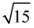
in the fourth section, both with rational approximations and with geometric constructions. This treatment of an irrational number was not really studied until centuries later, so we might say that Fibonacci was well ahead of his time!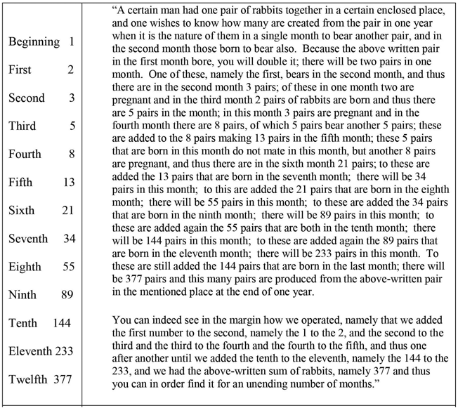
Figure 10.3. The rabbit problem, as it was stated (with the left-marginal note included).
Some of the classical problems, which are considered recreational mathematics today, first appeared in the Western world in Liber Abaci. This book is of particular interest to us because it was the first publication in Western culture to use the Hindu numerals to replace the clumsy Roman numerals; because Fibonacci was the first to use a horizontal fraction bar; and because it casually includes a recreational mathematics problem that has made Fibonacci famous for posterity. This is the problem of the regeneration of rabbits (see fig. 10.3).
To see how this problem’s situation would look on a monthly basis, consider the chart in figure 10.4. If we assume that a pair of baby (B) rabbits matures in one month to become offspring-producing adults (A), then we can set up the following chart:
This problem generated the sequence of numbers
1, 1, 2, 3, 5, 8, 13, 21, 34, 55, 89, 144, 233, 377, . . .
Today, this sequence is known as the Fibonacci numbers. At first glance, there is nothing spectacular about these numbers beyond the relationship that would allow us to generate additional numbers of the sequence quite easily. We notice that every number in the sequence (after the first two) is the sum of the two preceding numbers. The Fibonacci sequence can be written in a way so that its recursive definition becomes clear: each number is the sum of the two preceding ones:
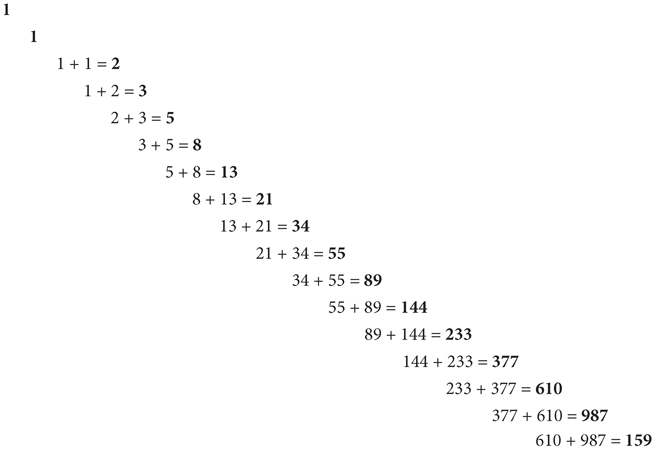
Figure 10.4.
The Fibonacci sequence is the oldest known (recursive) recurrent sequence. Although there is no direct evidence that Fibonacci knew of this relationship, we can safely assume that a man of his talents and insight would have recognized it. It took another four hundred years before this relationship appeared in print beyond his book.
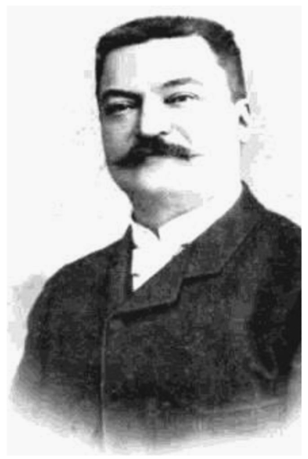
Figure 10.5. François-Édouard-Anatole Lucas.
These numbers were not identified as anything special during the time Fibonacci wrote Liber Abaci. As a matter of fact, the famous German mathematician and astronomer, Johannes Kepler (1571–1630), mentioned these numbers in a 1611 publication1 when he said that the ratios “as 5 is to 8, so is 8 to 13, so is 13 to 21 almost.” Centuries passed and the numbers still went unnoticed. In the 1830s, C. F. Schimper and A. Braun noticed the numbers appeared as the number of spirals of bracts on a pinecone. In the mid-1800s the Fibonacci numbers began to capture the fascination of mathematicians. They took on their current name (“Fibonacci numbers”) from François-Édouard-Anatole Lucas (1842–1891), the French mathematician usually referred to as “Edouard Lucas,” who later devised his own sequence by following the pattern set by Fibonacci. Lucas numbers form a sequence of numbers much like the Fibonacci numbers, and also closely related to the Fibonacci numbers. Instead of starting with 1, 1, 2, 3, 5, 8, 13, 21, . . . , Lucas began his sequence with 1, 3, 4, 7, 11, 18, 29, . . . .
At about this time the French mathematician, Jacques-Philippe-Marie Binet (1786–1856), developed a formula for finding any Fibonacci number given its position in the sequence. That is, with Binet’s formula we can find the 118th Fibonacci number without having to list the previous 117 numbers. The formula is:
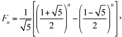
where Fn is the nth Fibonacci number. The Fibonacci numbers are probably the most famous and ubiquitous sequence of numbers in all of mathematics, since they appear in just about every aspect of our experiences.
Still one may ask, what is so special about these numbers? Let us just begin to scratch the surface by simply inspecting this famous Fibonacci number sequence and some of the remarkable properties it has.
As we did above, we will use the symbol F7 to represent the 7th Fibonacci number, and Fn to represent the nth Fibonacci number. Consider the first 30 Fibonacci numbers shown in figure 10.6.
With the seemingly endless applications of these lovely Fibonacci numbers, there must be a simple way to get the sum of a specified number of them. A simple formula would be helpful, as opposed to actually adding all the Fibonacci numbers to a certain point. To derive such a formula for the sum of the first n Fibonacci numbers, we will use a technique that will help us generate a formula. From the definition of the Fibonacci numbers, we can write that symbolically as Fn+2 = Fn+1 + Fn where n > 1. This can be rewritten as Fn = Fn+2 - Fn+1. By substituting increasing values for n we get the following:
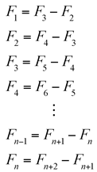
By adding these equations, you will notice that there will be many terms on the right side of the equations that will disappear (because their
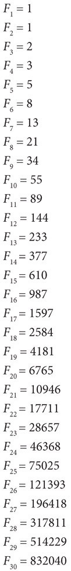
Figure 10.6.
sum is zero—since you will be adding and subtracting the same number). What will remain on the right side will be Fn+2 - F2 = Fn+2 - 1.
On the left side we have the sum of the first n Fibonacci numbers:F1 + F2 + F3 + F4 +...+ Fn, which is what we are looking for. Therefore, we get the following: F1 + F2 + F3 + F4 +...+Fn = Fn+2 - 1, which says that the sum of the first n Fibonacci numbers is equal to the Fibonacci number two further along the sequence minus 1. This can also be written symbolically as
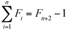
Just for entertainment, and to entice you a bit to perhaps enjoy the Fibonacci numbers in greater detail consider the following illustrations.
The sum of any ten consecutive Fibonacci numbers is divisible by 11. We could convince ourselves that this may be true by considering some randomly chosen examples. Take, for example, the sum of the following ten consecutive Fibonacci numbers: 13 + 21 + 34 + 55 + 89 + 144 + 233 + 377 + 610 + 987 = 2,563, which is divisible by 11, since 11 ∙ 233 = 2,563. We could repeat this for any other sum of 10 consecutive Fibonacci numbers, such as the sum of the ten consecutive Fibonacci numbers from F21 to F30, which is 2,160,598 = 11 ∙ 196,418. One way to go about convincing yourself of the truth in this “conjecture” is to keep on taking the sum of groups of ten consecutive Fibonacci numbers and checking to see if the sum is a multiple of 11. You could also try to prove the statement, mathematically. Listing the remainders of the first few Fibonacci numbers upon dividing by 11, we have
1, 1, 2, 3, 5, 8, 2, 10, 1, 0, 1, 1, 2, 3, 5, 8, 2, 10, 1, 0, . . .
We see that the remainders repeat in cycles of length 10. Since it is the remainder upon dividing a number by 11 that determines its divisibility by 11, all we have to do is check that in adding any 10 consecutive numbers in the sequence 1, 1, 2, 3, 5, 8, 2, 10, 1, 0, 1, 1, 2, 3, 5, 8, 2, 10, 1, 0, . . . we get a sum divisible by 11. We can check this as follows. Since the cycle of this sequence is of length exactly 10, adding any 10 consecutive numbers in this sequence will always come out to adding the 10 numbers—1, 1, 2, 3, 5, 8, 2, 10, 1, 0—in a cycle.
Imagine these 10 numbers arranged in a clockwise order around a circle (fig. 10.7), with the sequence above obtained by traveling around the circle over and over. Then you can see that any numbers missed at the beginning of a cycle—if the sum is started somewhere in the interior of the cycle—are regained from the next cycle; for example, the sum 5 + 8 + 2 + 10 + 1 + 0 + 1 + 1 + 2 + 3. This is because no matter where you start counting on the circle, counting 10 numbers clockwise around the circle will amount to counting all 10 numbers, because that’s exactly how many numbers there are. These 10 numbers have sum 33, which is indeed divisible by 11. (Also see: The Fabulous Fibonacci Numbers, A. S. Posamentier and I. Lehmann, Prometheus Books, 2007).
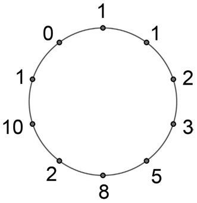
Figure 10.7.
Aside from the fact that Fibonacci is largely responsible for the use of our decimal number system and the numerical symbols we use, having introduced them to the Western world in 1202, he is primarily remembered today for the ubiquitous numbers that bear his name—the Fibonacci numbers.